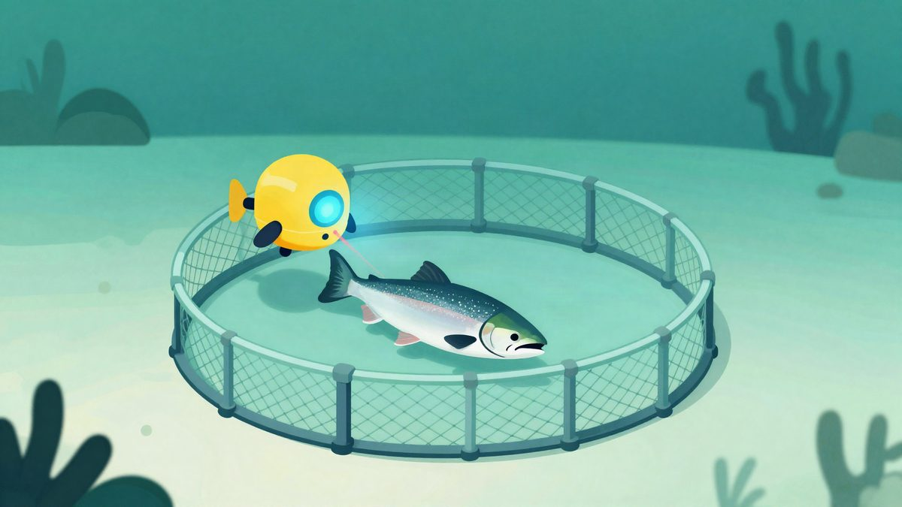
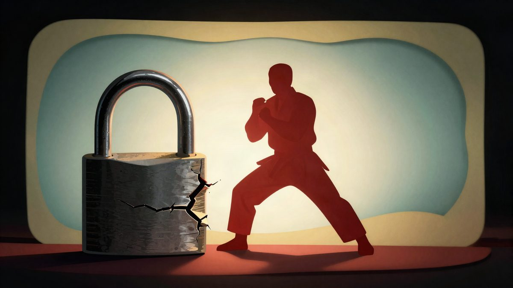

Norveška na lososima koristi više od 2.000 podvodnih robota s laserima protiv morskih uši

Tvrtka Stingray Marine Solutions tvrdi da više od 2.000 njezinih podvodnih robota s kamerama i laserima na norveškim farmama štiti više od 50 milijuna lososa i pastrva od morskih uši. Norveški veterinarski institut upozorava na neujednačene rezultate i prijave teške katarakte kod riba na lokacijama s laserima.
Na norveškim farmama lososa trenutačno radi više od 2.000 podvodnih robota koji laserom ubijaju morske uši. Proizvodi ih Stingray Marine Solutions, koja tvrdi da štite više od 50 milijuna lososa i pastrva. Te brojke nisu neovisno potvrđene.
Morske uši parazitiraju na ribi, hrane se njezinom kožom i uzrokuju oštećenja tkiva, stres i slabije zdravlje. Standardno se suzbijaju mehaničkim uklanjanjem ili toplinskom obradom, kratkim uranjanjem u zagrijanu vodu. Te metode same stvaraju nove probleme: norveški Veterinarski institut ozljede nastale tijekom skidanja uši navodi kao jedan od vodećih uzroka uginuća i lošije dobrobiti uzgojenih lososa.
Kako sustav radi
Robot kombinira stereo kamere, plavo osvjetljenje i precizne lasere. Plavo svjetlo pojačava kontrast između parazita i kože lososa, pa software može razlikovati metu od ribe. Laser zatim ubija pojedinačne uši dok riba slobodno pliva. Stingray tvrdi da jedna jedinica može ispaliti do pet laserskih impulsa u sekundi i raditi neprekidno, 24 sata na dan.
Koliko su štetne klasične metode
Istraživanje sažeto u bazi FAO AGRIS pokazalo je da je kod tipičnog kaveza sa 150.000 riba medijan uginuća unutar dva tjedna iznosio 790 riba nakon toplinske obrade, a nakon mehaničke 928, uz velike razlike među lokacijama. Stručnjaci za zdravlje riba, inspektori i savjetnici koje je anketirao Veterinarski institut ozljede nakon skidanja uši ocijenili su najvažnijim uzrokom uginuća lososa. Studija objavljena u Journal of Fish Diseases utvrdila je da mehaničko skidanje uši može danima nakon jednog tretmana izazvati patološke promjene i uginuća.
Kontinuirani laserski tretman, ako je učinkovit, zaobilazi stiskanje i fizičko rukovanje ribom koji se povezuju s tim gubicima.
Neujednačeni rezultati i pitanje katarakte
Izvješće Veterinarskog instituta o zdravlju riba za 2024. navodi da učinak lasera ovisi o broju uši, morskim strujama i broju jedinica. Na rezultate utječe i položaj opreme unutar kaveza. Ispitanici su lasere ocijenili najkorisnijima kad je razina zaraze niska, a pri velikom broju uši njihov učinak bilo je teže uočiti.
Institut je zabilježio i prijave teške jednostrane katarakte kod lososa veličine za izlov na lokacijama s laserskim sustavima. To je dokumentirana zabrinutost, a ne dokaz da svaka instalacija šteti ribama, no pokazuje da se ukupna bilanca dobrobiti još ne može zaključiti.
Laseri bi farmama mogli omogućiti da smanje ili odgode neke velike akcije skidanja uši, što je važno zbog uginuća koja one uzrokuju. Dostupni podaci ipak ne pokazuju da tehnologija uklanja potrebu za drugim tretmanima. Središnje otvoreno pitanje je daju li roboti dosljedne rezultate pri najjačim zarazama s kojima se norveške farme suočavaju. Zasad ih treba shvatiti kao kontinuirano upravljanje parazitima, a ne kao konačno rješenje.
Izvor: Reddit r/nottheonion
Povezani članci
- Cortical Labs je povezao 15 bioloških računala u sustav HIVE27. listopada 2026.
 Google od 2027. traži registraciju svih Android developera, F-Droid upozorava na prijetnju23. listopada 2026.
Google od 2027. traži registraciju svih Android developera, F-Droid upozorava na prijetnju23. listopada 2026.
Capcom upozorava na phishing nakon curenja podataka s više od 11 milijuna Capcom ID računa22. listopada 2026.